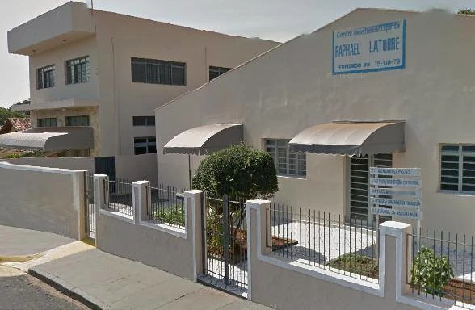

Entre em contato conosco via WhatsApp ou telefone para obter mais informações sobre nossas atividades.

Rua Duque de Caxias, 75
Jardim São João - Bebedouro, SP
CEP: 14701-000
(17) 99236-9192
caeraphaellatorre@hotmail.com
Segunda a Sexta: 13h às 16h e 19h às 21h30
19:00
19:00
Para o Atendimento Fraterno é necessário agendamento: (17) 99236-9192
19:00
Os trabalhos de Tratamento Espiritual e Reunião Mediúnica são alternados semanalmente. A Reunião Mediúnica é fechada ao público.
19:00
19:00
16:00
Não, todas as nossas palestras públicas e passes são de livre acesso. Para os grupos de estudo e algumas atividades específicas, recomendamos verificar a disponibilidade de vagas.
Não, nossa casa está aberta a todas as pessoas, independentemente de suas crenças ou religiões. O importante é o respeito mútuo e o desejo de aprendizado.
Aceitamos doações de alimentos, roupas, materiais de higiene e limpeza, que podem ser entregues diretamente em nossa sede nos horários de funcionamento. Para doações financeiras, entre em contato conosco para mais informações.
Entre em contato conosco via WhatsApp pelo número (17) 99236-9192 ou visite-nos pessoalmente para conversar sobre as possibilidades de voluntariado. Temos diversas áreas onde você pode contribuir, de acordo com suas habilidades e disponibilidade.